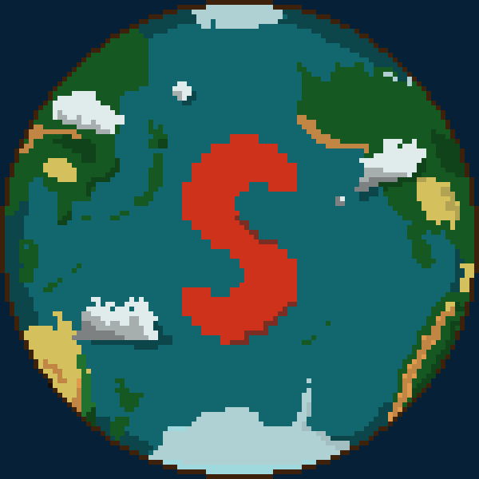

Bonjour à tous, c'est Balthazar ! Bienvenue dans cette nouvelle newsletter. Si vous êtes nouveau, n'hésitez pas à lire les trois premières newsletters pour comprendre ce qui a déjà été fait.
Cette semaine est un cas particulier. Nous n'avons pas ajouté de nouvelles mécaniques puisque nous nous somems focalisé sur la partie rapport du projet.
Nous avons établi un cahier des charges qui décrits de manière propre les objectifs que nous avions dès le début du projet. C'est-à-dire avoir une version jouable. Nous devons accorder plus d'importance aux fonctionnalités qu'à l'aspect graphique du jeu, le but étant d'être en accord avec les attentes de notre projet tuteuré.
Le code que nous avons produit jusqu'ici est désormais entièrement documenté en Anglais, permettant la compréhension par tous. Nous envisageons une version en Français, mais cela n'est pas une priorité.
Nous avons un premier logo du jeu. Il risque de fortement changer dans les prochains mois.
Durant la semaine du 22/11/2021 au 28/11/2021, nous allons mettre en place une nouvelle manière de développer les fonctionnalités. Au lieu des 2 fonctionnalités pas semaine que nous faisons habituellement, nous allons désormais développer 3 fonctionnalités par semaine. L'objectif est de se rapprocher au plus vite de notre version minimale. Ainsi, le planning change une nouvelle fois et est disponible dans sa dernière version dans le salon planning de développement de notre serveur Discord.
N'hésitez pas à suivre le développement et à nous poser des questions sur notre serveur Discord.
Merci d'avoir lu cette quatrième newsletter et à la prochaine !
Team Spelunca.
Rédacteur : Balthazar PUGET